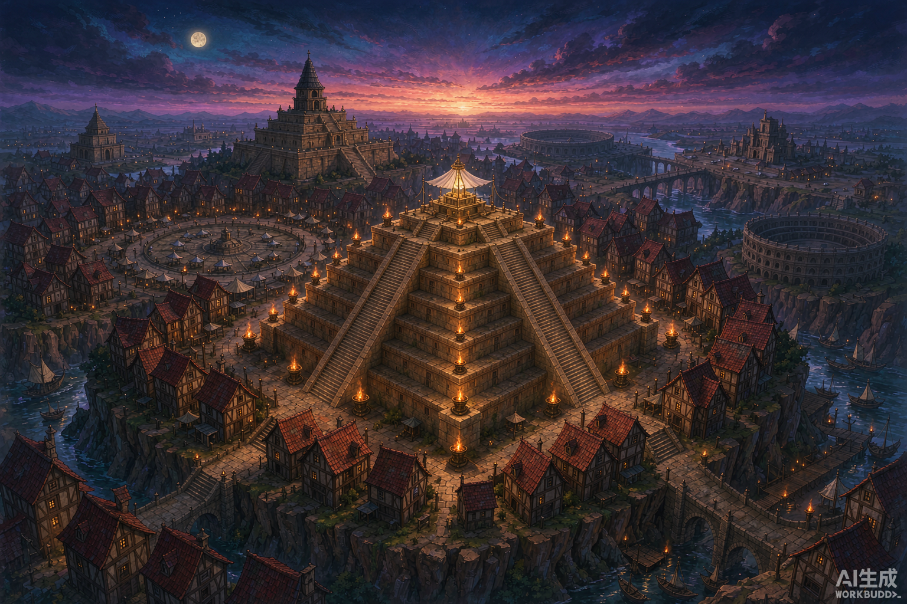
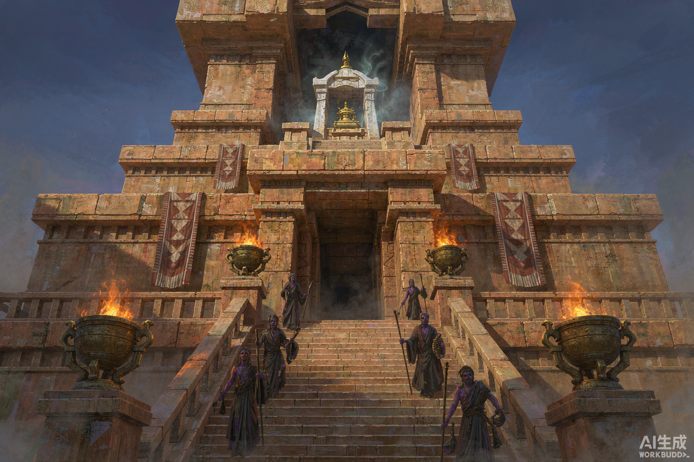
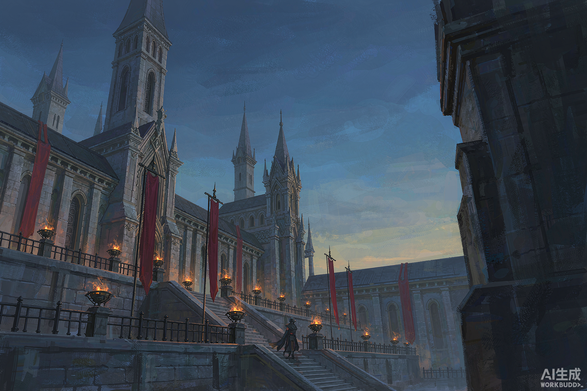
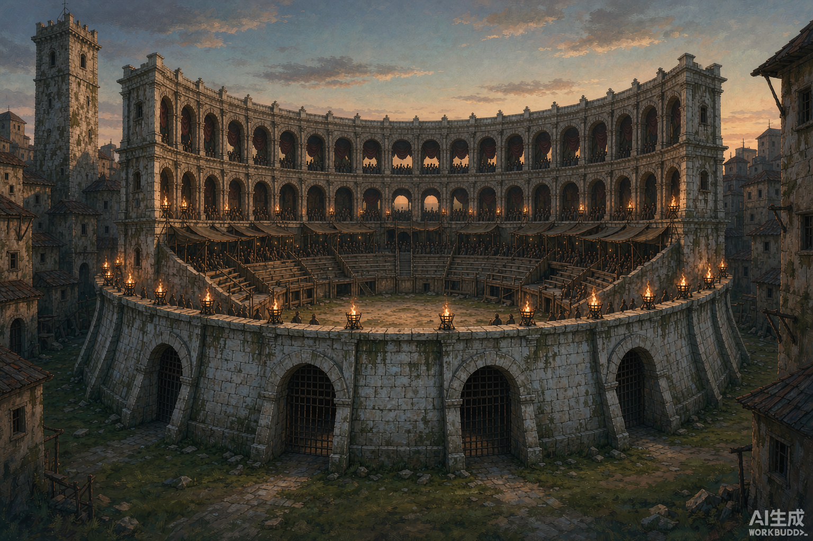
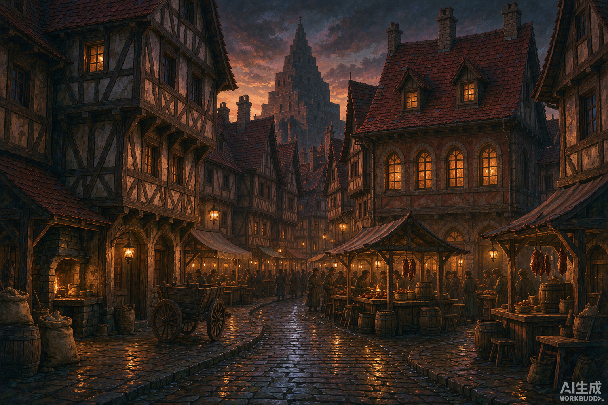
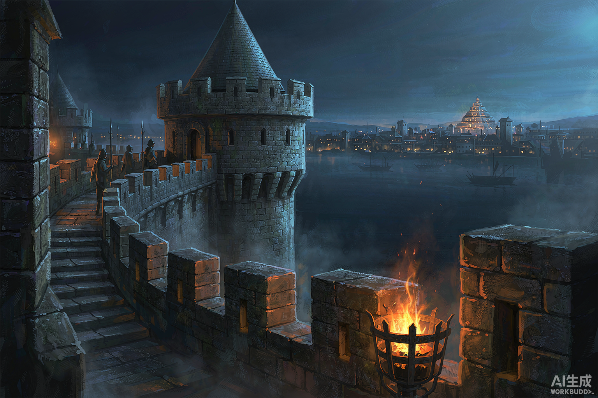

这一轮不建城。以下六张是风格参考（AI 概念图），三张是布局方案（工程示意图，与方块同源的比例）。 你选定风格与布局之后，我再按真实几何重新建造。
六张图分别对应：全城气象、圣座、王庭、角斗场、街市、城墙。它们回答的是"这座城看起来应该是什么样"，不是"它现在建成什么样"。






注：概念图由 AI 生成，右下角带水印；它只用来定方向。真正的建筑仍由程序按方块尺度生成，气质会接近，但不会像概念图那样细腻。
三套方案都满足你的硬条件：中心有阶梯金字塔圣座、正北有王座大厅、城内有角斗场、城墙可巡逻。差别在于它们怎么摆——这决定了你每天在城里走路的感觉。
| 维度 | A · 圣座居中 | B · 双核南北 | C · 三层山城 |
|---|---|---|---|
| 第一眼冲击 | 最强：四门都对塔 | 强：南北一条轴 | 最强：从河下仰望全城 |
| 走路体验 | 要绕塔，略堵 | 直来直去，最顺 | 上下坡多，最有味道 |
| 商业 | 环市集，四面均 | 集中在一侧，最旺 | 分层，市集在下城 |
| 工程量 | 中 | 中 | 大（挡土墙、台阶、河道） |
| 生存便利 | 好 | 好 | 取水近，但爬坡累 |
| 风险 | 大道断头 | 圣座偏心 | 地形整平量最大 |
需要你拍板的三件事：
① 布局选 A / B / C（或"A 的圣座 + B 的仪式大道"这种混合，也行）。
② 风格参考里哪几张最接近你想要的？哪几张不对味，我换方向重出。
③ 城内密度：现在这种"街街贴房"的密度，是要更密（像威尼斯），还是留出更多院子与空地（像北方小城）？
你定完这三条，我再按方块尺度正式建。建造前我会先出一版线框体量图（不是 AI 图，是真实几何），确认比例之后再落方块。
图纸世界坐标 600×600，上为北；街道宽度按真实比例压缩。 参考图仅定气质，不代表最终材质与细节。